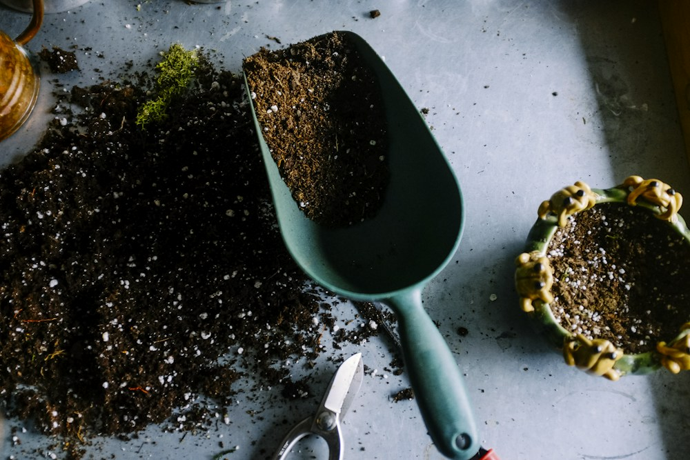
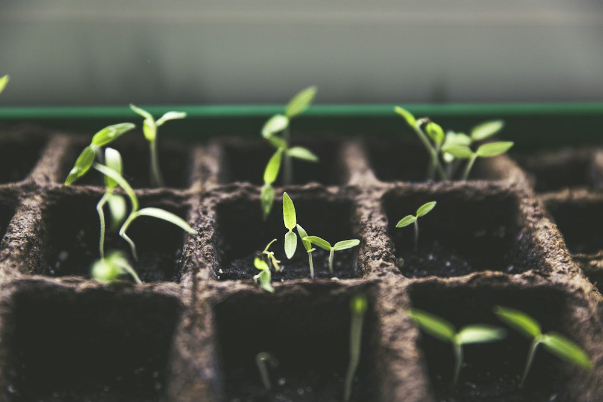

Materials needed
Inspiration


Stillnote Editor
Stillnote is a local-first Markdown workspace that brings notes, tasks, diagrams, code, and thoughtful AI into one calm desktop app, so you can focus on what matters most.
Available for macOS and Windows · Your notes stay as ordinary files


A little room to grow. Try the checklist or open a file
WHY STILLNOTE
Your notes should outlive the app that made them. Stillnote keeps your work in ordinary Markdown files, then adds the tools you need without taking ownership of your thinking.
A COMPLETE WORKSPACE
Start with a sentence. Follow it into a plan, a diagram, a task list, a calculation, or a conversation.
WRITE
Rich, focused editing that keeps the source readable. Link notes, headings, exact lines, and tasks without leaving your keyboard.
ASK
Ask questions, find context across your vault, or preview a complete edit before applying it. Powered by Ollama Cloud.
Help me turn this into a plan.
I found three clear steps in your note…
BUILD
Edit common code formats with syntax highlighting, line numbers, folding, bracket matching, and indentation.
const idea = {
status: 'growing',
place: 'stillnote'
};EXPLORE
Move naturally between notes, visual canvases, spreadsheets, graphs, geometry, 3D calculations, PDFs, images, and 3D models—all inside the same vault.
CONNECTED WHEN YOU WANT IT
Ask questions about the note in front of you, search relevant notes, and preview AI-assisted edits.
Turn task lists into workspace files, sync changes, and link a task directly back to the exact line in a note.
Use the Graphing Calculator, Geometry Tool, and 3D Calculator, with their state saved inside your vault.
LOCAL FIRST BY DESIGN
Open any folder as a vault. Stillnote reads and writes ordinary files there, so your work remains easy to back up, sync, version, or open with other tools.
MAKE SOME SPACE